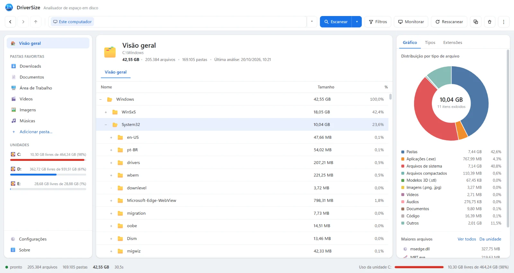

Fast scanning
Scans the entire drive in minutes with progressive scanning: if it stops midway, it resumes where it left off.
DriverSize scans your drives, measures every folder and shows — with charts and lists — exactly where the space went. No background services, no hooks, no slowing your PC down.

Real screenshot of the app, no retouching.
Everything you need to understand — and free up — space on your computer.
Scans the entire drive in minutes with progressive scanning: if it stops midway, it resumes where it left off.
Pie and bar charts show how space is distributed by folder and file type — no spreadsheets.
File Explorer–style interface: folder tree, sortable columns and keyboard shortcuts.
Find the largest, oldest or empty items and export everything to Excel, CSV or XML in one click.
A detailed view of what's taking up your disk: folder tree, sortable list and charts.
Getting started with DriverSize is simple.
Pick a drive, a specific folder or several locations to scan at once.
DriverSize walks the tree in the background while you follow the progress in real time.
Sort by size, check the chart by type and drill into each folder down to the culprit file.
Delete, move or archive right from DriverSize — or export the report before deciding.
Yes. The free version shows the size of every folder and file, with charts and reports, with no trial period. An optional Professional version adds printing, PDF export and command-line automation.
No. DriverSize installs no services, system hooks or Explorer extensions: it only uses resources while you are scanning. Once you close it, nothing keeps running in the background.
Yes. Besides local disks, DriverSize scans external HDDs, SSDs, USB sticks, SD cards, NAS, SAN and network shares (UNC paths).
“Size” is the actual sum of the file bytes. “Size on disk” takes the space occupied in clusters into account — so it is always equal to or larger than the logical size.
For regular folders, no. To read protected system areas (such as System Volume Information), run as administrator — the app has a “Restart as administrator” option.
DriverSize is free. If it helped you reclaim disk space, you can support the project with a coffee — any amount encourages new versions and improvements.
NSIS installer, no background services and no sign-up. Portable version available. Works on Windows 10 and 11 (64-bit).